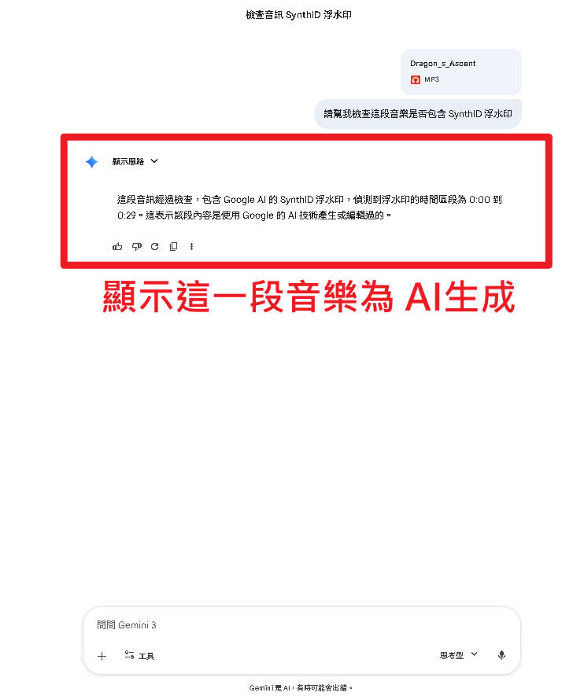
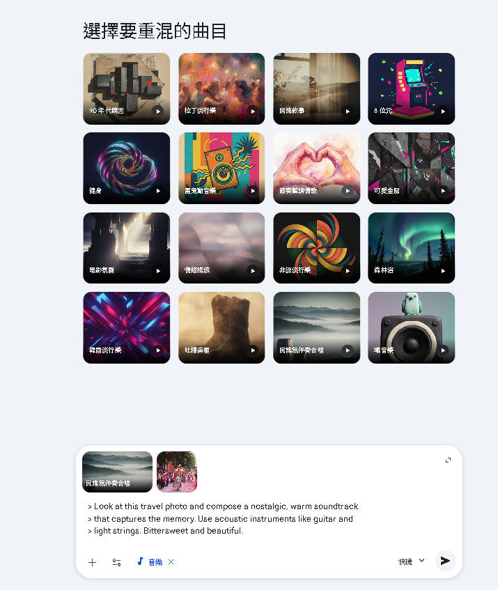

SynthID、實戰範例與 FAQ
從理論到實踐，解答所有疑問
SynthID 是由 Google DeepMind 開發的 AI 內容識別技術，能在 AI 生成的音樂中嵌入人耳無法察覺的數位浮水印，用於標記 AI 生成內容的來源。所有透過 Gemini / Lyria 生成的音樂都會自動嵌入 SynthID。
（浮水印嵌入在頻譜層面，人耳完全無法感知差異）
| 特性 | 說明 | 技術細節 |
|---|---|---|
| 🔇 不可聽 | 浮水印嵌入在頻譜層面，人耳完全無法察覺 | 利用人耳聽覺遮蔽效應，在不敏感頻率區嵌入資訊 |
| 💪 高韌性 | 經過多種處理後仍可偵測 | MP3/AAC 壓縮、剪輯、加速/減速、格式轉換皆可存活 |
| ⚡ 強制性 | 所有 Gemini/Lyria 生成的音樂都會自動嵌入 | 無法關閉、無法手動移除 |
| 🔍 可驗證 | 可透過工具驗證音訊是否包含 SynthID | 上傳到 Gemini App 即可檢測 |
如果你想確認一段音樂是否由 AI 生成，可以透過 Gemini App 進行驗證。以下是操作步驟：
將你想要驗證的音樂檔案準備好（支援 WAV、MP3 等常見格式）。
打開 gemini.google.com，在對話框中點擊附件按鈕，上傳音樂檔案。
上傳音樂檔案後，在對話框輸入以下提示詞：
請幫我檢查這段音樂是否包含 SynthID 浮水印
Gemini 會分析音訊並告訴你是否偵測到 SynthID 浮水印。如果有，代表這段音樂是由 AI 生成的。

需求：為 3 分鐘旅遊 Vlog 製作輕快背景音樂
Create a cheerful and inspiring travel vlog background music. Acoustic guitar with light percussion and soft synth pads. Feel-good and adventurous mood. No vocals. 120 BPM.No vocals 避免人聲干擾旁白；feel-good 設定正面情緒；light percussion 讓節奏不搶鏡。多段 30 秒串接可覆蓋整支影片。
需求：科技 Podcast 的開場 jingle
Short tech podcast intro jingle. Modern electronic beat with futuristic synth sounds and a catchy melody hook. Energetic and professional. 100 BPM.Short 和 jingle 暗示要簡短片段；futuristic synth 營造科技感；catchy melody hook 確保記憶點。
需求：企業簡報的優雅背景配樂
Corporate presentation background music. Gentle piano with soft strings. Clean, professional, and uplifting. Minimal and not distracting. 90 BPM. No vocals.Corporate 設定商務調性；Minimal and not distracting 確保不搶簡報焦點；慢節奏 90 BPM 營造沉穩感。
需求：TikTok / Reels / Shorts 的洗腦配樂
Trendy social media short video music. Catchy beat with bass and trap hi-hats. Fun and energetic with a memorable drop. 130 BPM.Trendy 追求流行感；Catchy + memorable drop 打造容易上癮的洗腦節奏；trap hi-hats 是當下短影音的標配音色。
需求：上傳旅遊照片，讓 AI 感知情境自動配樂
Look at this travel photo and compose a nostalgic, warm soundtrack that captures the memory. Use acoustic instruments like guitar and light strings. Bittersweet and beautiful.nostalgic 和 bittersweet 強調懷舊感；captures the memory 引導 AI 理解這是回憶場景。搭配照片上傳效果更好。

breathy female vocals、deep baritone male vocals| 資源 | 來源 | 說明 |
|---|---|---|
| Gemini 正式加入音樂生成功能 | KocPC | Lyria 3 功能介紹與實測 |
| Gemini 導入 Lyria 3 模型 | TechNews | 技術新聞報導 |
| Gemini 可以創作音樂啦 | 方格子 | 附提示詞指南的詳細教學 |
| Gemini 音樂模型生成配樂 | YouTube | 影片示範教學 |
免費開源的音訊編輯軟體，最適合剪輯、拼接多段 AI 生成的音樂片段。
恭喜你完成了 Gemini 音樂生成術的完整學習！
你已經學會了：
現在就去 Gemini 試試看吧！記住：好的提示詞 = 好的音樂。多嘗試、多實驗，找到屬於你的 AI 音樂風格！